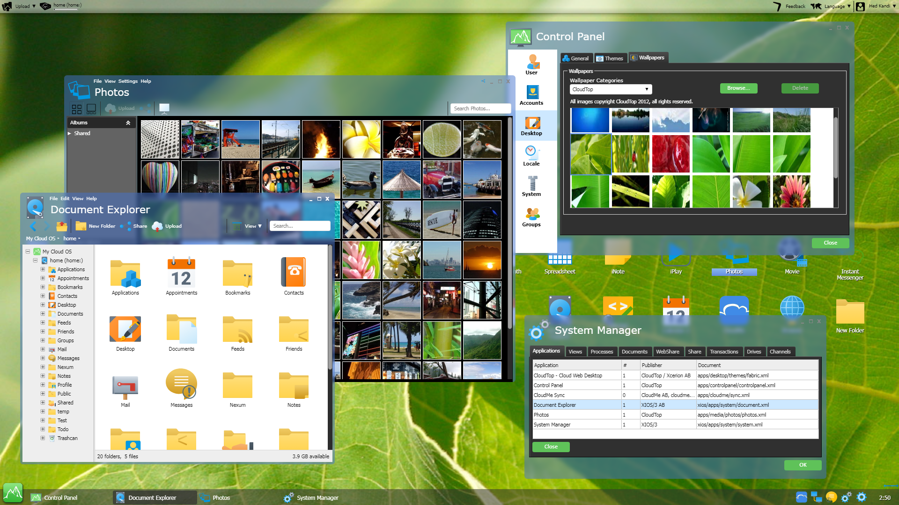

Many years ago, we set out with the goal to simplify development, making applications work across devices, and use XML to build applications instead of traditional programming. With a background in building an XML Application Server and an XML-based web server we had seen the promise of XML, and how the hierarchical structure of XML itself helped to solve many recurring problems. The time had come to apply XML to software that was supposed to run on Windows, Mac, Linux, mobile devices, and other types of devices.
We wanted to break out of the boundaries enforced by native compiled code for a specific processor architecture and the underlying operating system. We wanted applications that would run equally well on Windows, as on Mac or Linux. We wanted applications that could change their form factor to also run on mobile devices. We wanted the applications of the operating system to store all its data in tagged XML markup that nourished interoperability between applications and long-term storage and retrieval of information while simplifying search.
We concluded that it would not be good enough to create a cross-device, cross-operating system development framework, we needed new data storage technology to replace the outdated xomputer file systems with an XML repository, a new set of productivity applications for office workers that breathed XML, and we needed a collaborative XML-based operating system to tie it all together to complete our vision.
This is a long-term vision and we are not at the end of it yet, but we are step by step humbly getting closer to realizing it. We got the XML development platform with XIOS/3, we got the XML repository and Singularity Database with CloudBackend. What we are missing is the completion of the productivity applications and the cloud-based XML operating system, CloudTop.
Figure 1. CloudTop cloud-based desktop and applications built entirely in XML.
|  |
CloudTop is the answer to the question, how would you design a new operating system if you knew the Internet and XML existed? The OS would be delivered over the Internet and always be up-to-date without system updates. Any applications written in it would allow for collaboration with other people over the Internet. All information stored in the OS would be in XML format and any data exchanged for collaboration would be in XML. Applications would be able to open each other's data and transform it into its required format, possibly allowing a word processing application and a presentation application to only be two different views into the same XML document.
This paper will introduce a few applications built for CloudTop and some of the challenges with using XIOS/3 and CloudBackend to build CloudTop.